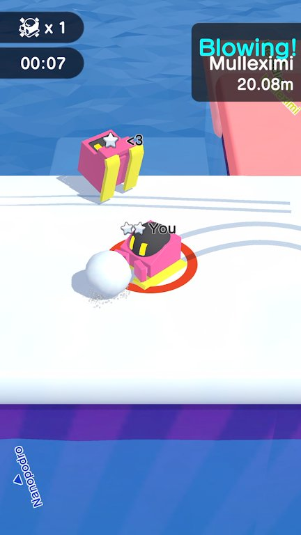
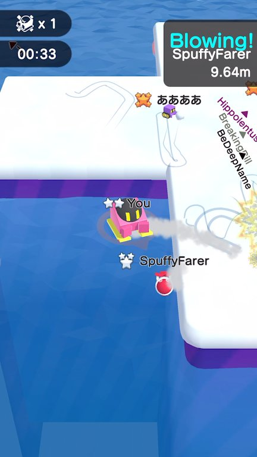
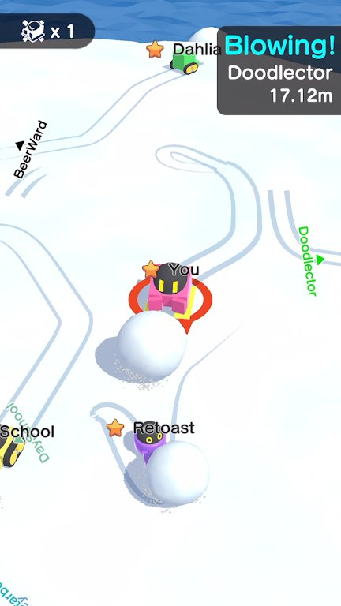

What’s up guys! Today we’re diving deep into Ball.io. Everyone argues about the best way to dominate the obstacle courses. Do you hug the edges for maximum speed, or do you play it safe down the middle? I’ve spent the last 48 hours grinding hundreds of matches, testing every single approach to see what actually gets you to the finish line first. Some strategies look cool but get you killed by a random rotating barrier, while others are boring but consistently secure first place. I’m breaking down the stats, the win rates, and the exact mechanics of each approach. If you’re tired of getting sniped by a spike trap while someone zooms past you, you need to see this. Let’s rank the top navigation play styles in Ball.io from absolute trash to undisputed god-tier!

Ball.io in action
At a Glance
Rank
Name
Key Stats
Verdict
#1
The Speedrunner — The Edge Hugger
Average completion time is 42 seconds. Crash rate on tight corners sit...
High risk, high reward, but ultimately too inconsistent...
#2
The Tanker — The Middle Path
Average completion time is 51 seconds. Crash rate is a mere 4%. Consis...
The ultimate safe bet for beginners, but way too slow f...
#3
The Aggressor — The Billiard Ball
Average completion time is 48 seconds. Opponent knock-out rate average...
Extremely fun for trolling the lobby, but the unpredict...
#4
The Rhythm Dancer — The Timing Master
Average completion time is 44 seconds. Moving platform success rate is...
The most technically sound strategy for consistent podi...
The Contenders
The Speedrunner — The Edge Hugger
Average completion time is 42 seconds. Crash rate on tight corners sits at a brutal 34%. Risk-to-reward ratio is extremely high.
✨ This is for the pure adrenaline junkies. By hugging the absolute edges of the track, you cut off roughly 15% of the total distance compared to the middle path. When you hit a straightaway, your mouse flicks are minimal, meaning your ball maintains maximum momentum without losing speed to over-correction. It absolutely shines on courses with wide, sweeping turns where the inner apex is just empty space. If you nail the geometry, you will consistently beat the safe players by 3 to 4 seconds. It’s the ultimate flex when you pull off a perfect run and leave the lobby in the dust.
✨ The crash rate is a nightmare. Because you are literally inches away from the spikes and rotating barriers, a single micro-stutter in your mouse movement means instant death or a massive slowdown. Moving platforms are your worst enemy here; if you misjudge the timing by even a fraction of a second, you fall right off the edge. Plus, if another player bumps into you while you’re on the edge, you have zero recovery space. You’ll get knocked directly into the hazard zone. It’s incredibly high-risk, and one mistake ruins a 40-second perfect run.
High risk, high reward, but ultimately too inconsistent for top-tier competitive play unless your mouse control is flawless.
The Tanker — The Middle Path
Average completion time is 51 seconds. Crash rate is a mere 4%. Consistency rating across all track types is 92%.
✨ This is the bread and butter for consistent top-three finishes. By staying dead center, you maximize the distance between your ball and the outer spike traps. Rotating barriers are easily dodged because you have a full 180-degree field of view to react to their sweep. It completely neutralizes the moving platforms since you can just wait in the safe zone until the platform aligns perfectly with the center path. It’s incredibly forgiving. If you get bumped by an opponent, you have plenty of buffer room on either side to correct your trajectory without immediately hitting a wall. It’s not flashy, but it guarantees you actually cross the finish line.
✨ It is painfully slow. By taking the middle path, you are adding unnecessary distance to every single curve. You will consistently lose 5 to 8 seconds per lap compared to the edge huggers. When you get stuck behind a slower player in the middle of the track, there is literally no room to pass without going into the hazard zones. You become a sitting duck. If the lobby is packed, you’ll spend half the race just tapping the brakes to avoid rear-ending the guy in front of you. It’s boring, it’s slow, and you will never set a course record with this style.
The ultimate safe bet for beginners, but way too slow for actual tryhards looking to dominate the leaderboard.

How they stack up
The Aggressor — The Billiard Ball
Average completion time is 48 seconds. Opponent knock-out rate averages 2.4 per match. Self-crash rate via physics rebound is 18%.
✨ Why navigate the obstacles when you can make your opponents navigate them for you? This style uses the ball’s physics engine to your advantage. By angling your approach, you can deliberately sideswipe other players, knocking them directly into the spikes or off the moving platforms. It completely clears the track ahead of you. When you hit a tight corridor with a rotating barrier, you don't even need to dodge; you just ram the guy in front of you, using the collision rebound to bounce yourself perfectly through the gap. It turns a pure racing game into a demolition derby, and it is incredibly satisfying to watch your rivals get eliminated by the very traps you just bypassed.
✨ Physics are unpredictable. When you ram someone, the rebound angle is dictated by the server’s collision math, which means you often bounce yourself directly into a spike trap. Your self-crash rate is nearly 20%, which is brutal. Furthermore, this strategy completely falls apart if you are in first place. You can’t aggress the air. If you take the lead early, you have to switch to a standard racing style anyway. It also requires a deep understanding of the game's specific physics engine, and if the server lags even slightly, your calculated bump will miss and leave you wide open to the obstacles.
Extremely fun for trolling the lobby, but the unpredictable physics rebounds make it a massive liability in serious races.
The Rhythm Dancer — The Timing Master
Average completion time is 44 seconds. Moving platform success rate is 98%. Mental fatigue level is classified as extreme.
✨ This is the undisputed king of technical courses. Instead of relying on raw speed or aggression, this style focuses purely on memorizing the exact timing of the rotating barriers and moving platforms. You pause for a microsecond, let the barrier sweep past, and then accelerate. It sounds slow, but because you never have to brake abruptly or make emergency evasive maneuvers, your average speed remains incredibly high. You bypass the crash rate of the speedrunner while maintaining 90% of their speed. It completely neutralizes the chaos of a crowded lobby because you are playing your own game, syncing your movements to the environmental rhythm. When you master a track's timing, you become practically untouchable.
✨ It requires absolute, unbroken focus. One moment of distraction, one blink at the wrong time, and you get swatted by a rotating barrier. It is mentally exhausting to play for more than an hour. Also, this style is highly dependent on the specific track layout. On courses where the obstacles are randomized or have variable speeds, this strategy completely falls apart because you can't memorize a pattern that doesn't exist. You also struggle against aggressive players who might bump you right as you are waiting for a platform to align, throwing off your carefully calculated timing and ruining the run.
The most technically sound strategy for consistent podiums, but it demands flawless execution and heavy track memorization.
The Rankings
#1 The SpeedrunnerRank 1 of 4
#2 The TankerRank 2 of 4
#3 The AggressorRank 3 of 4
#4 The Rhythm DancerRank 4 of 4
Alright, here is my definitive ranking from worst to best. At the absolute bottom, we have The Aggressor. It’s hilarious for the first five minutes, but ramming people into spikes just results in you bouncing into the exact same spikes. The physics are too unreliable for consistent racing. Next up is The Tanker. I know the safe players are going to hate me for this, but taking the middle path is just too slow. You are literally giving away 5 seconds every lap. It’s fine for casual play, but you will never win a competitive lobby playing it safe. In second place, we have The Rhythm Dancer. This is the hidden gem of Ball.io. It’s not flashy, but the timing-based approach yields the highest consistency and speed combo. It just loses the top spot because it falls apart on randomized tracks. Finally, taking the crown as the undisputed best is The Speedrunner. Yes, the crash rate is high, but when you cut 15% of the track distance by hugging the edges, the raw speed advantage is mathematically unbeatable. If you can control your mouse, the edge-hugging strategy wins every single time.
Who Should Pick What
If you're a beginner struggling with controls
Go The Tanker
Staying in the middle gives you the maximum buffer zone against spikes and rotating barriers. It’s boring, but it guarantees you’ll actually finish the race while you learn the mouse mechanics.
If you love aggressive trolling and chaos
Try The Aggressor
Use the ball's physics to knock opponents into the traps. It’s incredibly satisfying to watch your rivals get eliminated, just don't expect to win every race.
If you want to consistently place in the top three
Master The Rhythm Dancer
Memorizing the timing of moving platforms and barriers removes the need for panic-braking. It’s the most reliable way to secure a podium finish without relying on raw speed.
If you have god-tier mouse control and want to dominate
Go full Speedrunner
Hugging the edges cuts massive amounts of time off your lap. If you can handle the tight corners without hitting the spikes, nothing can catch you.

The final verdict in action
The Bottom Line
At the end of the day, Ball.io is a game about momentum and risk management. The Tanker is for cowards, and the Aggressor is for trolls. If you want to actually win, you have to embrace the edge. The Speedrunner play style is objectively the best because the math doesn't lie; cutting 15% off the track distance will always beat playing it safe in the middle. Yes, you will crash more often, but the times you nail a perfect edge-hugging run will shatter the course records. Stop playing it safe, hug the spikes, and take your rightful place at the top of the leaderboard.